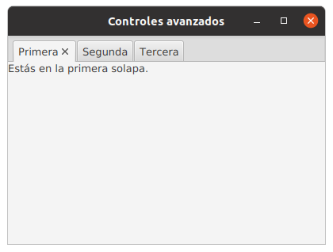
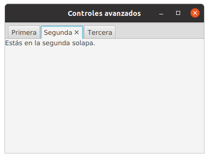
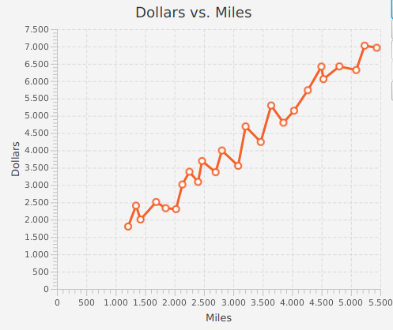
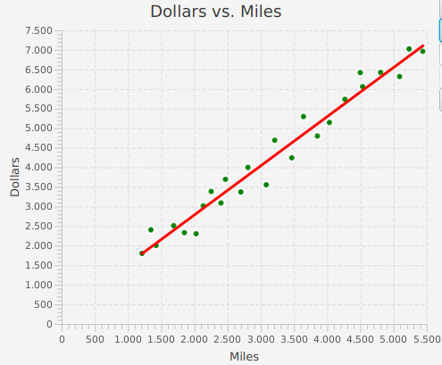
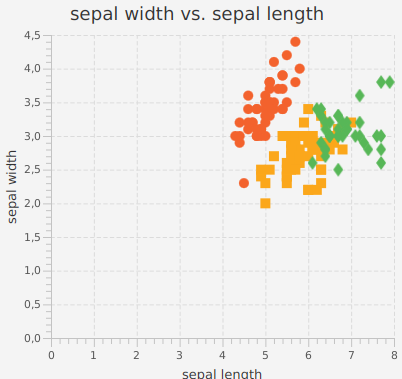
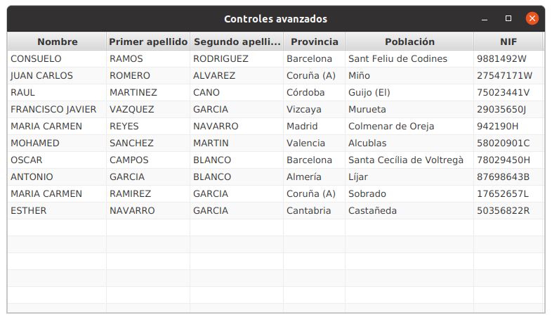
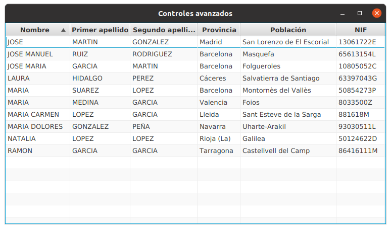

Al último, tienes acceso desde la web de la biblioteca.
Los paneles con solapas TabPane son componentes muy flexibles que permiten mostrar contenido distinto según la solapa que tengamos seleccionada:
HBox contenido1 = new HBox(new Label("Estás en la primera solapa."));
Tab solapa1 = new Tab("Primera", contenido1);
HBox contenido2 = new HBox(new Label("Estás en la segunda solapa."));
Tab solapa2 = new Tab("Segunda", contenido2);
HBox contenido3 = new HBox(new Label("Estás en la tercera solapa."));
Tab solapa3 = new Tab("Tercera", contenido3);
TabPane tabPane = new TabPane();
tabPane.getTabs().add(solapa1);
tabPane.getTabs().add(solapa2);
tabPane.getTabs().add(solapa3);
Este es el resultado final:
 Cada vez que cambias de solapa, se muestra el contenido asociado a esa solapa.
El componente FileChooser abre una ventana de diálogo para que podamos seleccionar un fichero:
File file = fileChooser.showOpenDialog(stage);
La referencia Stage que le debemos pasar al método es la ventana a la que se regresará después de que la ventana de diálogo se cierre:
Después de seleccionar el fichero, y pulsamos el botón abrir, el método nos devuelve una referencia de tipo File, con la que podemos acceder al contenido del fichero.
StringBuffer sb = new StringBuffer();
BufferedReader br = new BufferedReader(new FileReader(file));
br.lines().forEach(s -> sb.append(s + "\n"));
textArea.setText(sb.toString());
JavaFX proporciona un potente conjunto de componentes para realizar presentaciones gráficas de datos.
En particular, vamos a ver dos componentes con los que vas a poder visualizar los datos en la aplicación que estás desarrollando en prácticas.
El primero de los componentes para la creación de gráficas es la clase LineChart, con ella puedes crear gráficos de líneas, como el que se muestra en esta imagen.
Para crear una gráfica de líneas debemos:
Veamos con un ejemplo cada uno de estos pasos.
1. Crear un objeto para cada uno de los dos ejes de la gráfica.
NumberAxis xAxis = new NumberAxis();
xAxis.setLabel("No of employees");
NumberAxis yAxis = new NumberAxis();
yAxis.setLabel("Revenue per employee");
El método setLabel(String) te sirve para definir el texto sobre cada eje.
2. Crear un objeto para la gráfica con los ejes
LineChart lineChart = new LineChart(xAxis, yAxis);
3. Crear un objeto con la serie de datos que se va a visualizar en la gráfica.
XYChart.Series series = new XYChart.Series();
series.setName("2014");
series.getData().add(new XYChart.Data(1211, 1802));
series.getData().add(new XYChart.Data(1345, 2405));
series.getData().add(new XYChart.Data(1422, 2005));
series.getData().add(new XYChart.Data(1687, 2511));
series.getData().add(new XYChart.Data(1849, 2332));
....
Como ves, esta es la parte más tediosa.
Añadir el objeto con la serie de datos al objeto de la gráfica.
lineChart.getData().add(series);
Puedes dibujar más de una serie de datos en la misma gráfica, simplemente crea un nuevo objeto XYChart.Series anádele los nuevos datos, y finalmente, añade la nueva serie a la gráfica.
Para cambiar el título y las leyendas de los ejes:
lineChart.setTitle("Texto título de la gráfica");
xaxis.setLabel("Texto eje de las x");
yaxis.setLabel("Texto eje de las y");
En la misma gráfica puedes combinar un gráfico de líneas con otro de puntos. Esta combinación tiene «truco», que es utilizar una hoja de estilo css.
.default-color0.chart-series-line { -fx-stroke: transparent; }
.default-color1.chart-series-line { -fx-stroke: red; }
.default-color0.chart-line-symbol {
-fx-background-color: white, green;
}
.default-color1.chart-line-symbol {
-fx-background-color: transparent, transparent;
}
.default-color0.chart-legend-item-symbol{
-fx-background-color: green;
}
.default-color1.chart-legend-item-symbol{
-fx-background-color: red;
} La hoja de estilo se carga con la siguiente instrucción:
scene.getStylesheets()
.add(getClass().getClassLoader()
.getResource("root.css").toExternalForm());
Si creamos una nueva serie de datos y la añadimos a la gráfica, obtenemos:
Existe una clase específica para visualizar gráficos donde cada dato es un punto de la gráfica, esta clase es ScatterChart.
Su uso es muy parecido al de los gráficos de línea, salvo que esta vez instanciamos la clase ScatterChart en vez de LineChart.
NumberAxis xAxis = new NumberAxis();
xAxis.setLabel("sepal length");
NumberAxis yAxis = new NumberAxis();
yAxis.setLabel("sepal widht");
ScatterChart scatterChart = new ScatterChart(xAxis, yAxis);
Después de añadir los datos, el resultado es el siguiente
series.getData().add(new XYChart.Data(5.1,3.5));
series.getData().add(new XYChart.Data(4.9,3.0));
series.getData().add(new XYChart.Data(4.7,3.2));
series.getData().add(new XYChart.Data(4.6,3.1));
....
Y también podemos visualizar más de una serie en la misma gráfica. JavaFX asignará un color diferente a cada gráfica.
Para mostras datos en tablas disponemos del componente TableView. Es un componente muy completo con mucha flexibilidad.
Supón quieres mostrar información de los objetos de la siguiente clase:
public class Persona {
private String nombre;
private String primerApellido;
private String segundoApellido;
private String provincia;
private String poblacion;
private String nif;
// Todos los getters deben estar definidos.
}
Para que se vea algo como esto:
Lo primero es construir un objeto de tipo TableView, y después crear y añadir cada una de las columnas de la tabla:
TableView<Persona> table = new TableView<>();
TableColumn<Persona, String> nombre = new TableColumn<>("Nombre");
nombre.setCellValueFactory(new PropertyValueFactory<>("nombre"));
TableColumn<Persona, String> primerApellido = new TableColumn<>("Primer apellido");
primerApellido.setCellValueFactory(new PropertyValueFactory<>("primerApellido"));
Fíjate que TableView es genérica e indicamos el tipo de datos que queremos visualizar.
Lo importante es el método setCellValueFactorynew(PropertyValueFactory<>("nombre"))
La cadena que se pasa como argumento es la propiedad de la clase Persona desde la que se va a extraer el dato.
public class Persona {
private String nombre;
Lo siguiente es añadir las columnas que acabamos de crear a la tabla:
table.getColumns().add(nombre);
table.getColumns().add(primerApellido);
table.getColumns().add(segundoApellido);
table.getColumns().add(provincia);
table.getColumns().add(poblacion);
table.getColumns().add(nif);
Y finalmente añadimos los datos a la tabla:
table.getItems().add(new Persona("CONSUELO", "RAMOS", ...));
La clase TableView ya tiene implementada funcionalidad muy interesante. Si pulsamos en el encabezado de una columna, los datos se ordenan automáticamente.
Si necesitamos conocer cuando la persona usuaria selecciona un elemento de la lista lo podemos hacer con:
ObservableList<Persona> selectedItems = tabla.getSelectionModel().getSelectedItems();
selectedItems.addListener((ListChangeListener<Persona>) change ->
System.out.println("Selection changed: " + change.getList()));
Primero obtenemos la lista observable de elementos, y a ella le añadimos el observador.
change.getList()
Lo que nos devuelve es la lista de Persona que están seleccionadas.
Podemos indicar que la lista admite selección múltiple de filas:
tabla.getSelectionModel().setSelectionMode(SelectionMode.MULTIPLE);
En JavaFX existe un componente gráfico que nos permite seleccionar fechas de un calendario con comodidad:
DatePicker datePicker = new DatePicker();
Cada vez que se selecciona una fecha, se genera un evento ActionEvent que podemos escuchar con setOnAction(ActionEvent e):
DatePicker datePicker = new DatePicker();
datePicker.setOnAction(e -> System.out.println(datePicker.getValue()));
Mostrará por consola la fecha seleccionada.
El tipo del objeto que devuelve datePicker.getValue() es LocalDate que ya estudiamos en el capítulo dedicado a Java 7 y 8
Si quieres establecer la fecha que se muestre en el control:
DatePicker datePicker = new DatePicker(LocalDate.now()
.withYear(2020)
.withMonth(1)
.withDayOfMonth(25));
Recuerda que tienes una interfaz fluída para establecer la fecha.
En esta presentación, hemos visto algunos de los componentes avanzados que nos proporciona JavaFX.
El modelo de programación sigue siendo el Observer, si nos interesan los eventos que genera algún componente nos suscribimos a ellos con una clase escuchadora.
Todos los componentes que hemos visto son muy potentes, y al mismo tiempo relativamente sencillos de utilizar.